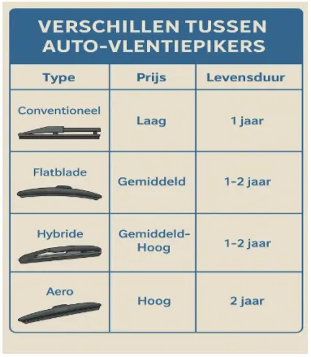
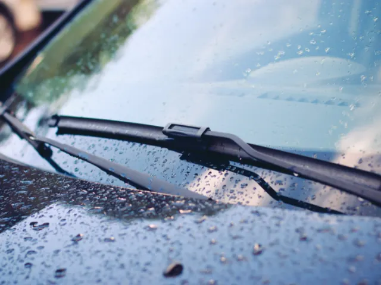

Met deze ruitenwissers in Nijmegen ben je verzekerd van een helder zicht
Gepubliceerd op 15 juli 2025

De beste ruitenwissers voor Nijmegen kiezen doe je door rekening te houden met het gematigde zeeklimaat met veel regen en wind. Flatblade of hybride ruitenwissers presteren het best in deze omstandigheden, omdat ze beter aansluiten op de voorruit en consistenter wissen bij wisselende weersomstandigheden.
Voor autorijders in Nijmegen zijn kwaliteitsvolle ruitenwissers essentieel vanwege het frequente regenachtige weer. Het gematigde zeeklimaat zorgt voor regelmatige neerslag gedurende het hele jaar, waardoor goede ruitenwissers cruciaal zijn voor de verkeersveiligheid. De meest betrouwbare merken voor Nederlandse weersomstandigheden zijn Bosch, Valeo, Champion en SWF, die allemaal uitstekende prestaties leveren bij wisselende weersomstandigheden.
Klimaatomstandigheden in Nijmegen en hun impact
Nederland kent een jaarlijkse neerslaghoeveelheid van gemiddeld 875 millimeter, wat in de periode 1910-2022 een toename van 26% laat zien. Deze neerslag is ongelijkmatig verdeeld over het jaar, met de grootste stijging in de wintermaanden (46% toename). Voor automobilisten in Nijmegen betekent dit dat ruitenwissers intensief gebruikt worden, vooral tijdens de herfst- en winterperiodes wanneer regenbuien en wisselende weersomstandigheden het vaakst voorkomen.
Verschillende types ruitenwissers
De onderstaande infografiek toont de vier hoofdtypen ruitenwissers die beschikbaar zijn voor Nederlandse automobilisten, met hun prijsklassen en verwachte levensduur:
Verschillende tussen auto-vlentiepikers

Deze overzichtstabel helpt je bij het kiezen van het juiste type ruitenwisser voor jouw auto. Conventionele ruitenwissers zijn goedkoop maar hebben een kortere levensduur, terwijl aero-ruitenwissers duurder zijn maar tot twee jaar meegaan. Flatblade en hybride varianten bieden een goede balans tussen prijs en prestaties. Voor meer gedetailleerde informatie over de ruitenwisser op de website autodoc.be vind je technische specificaties en installatiehandleidingen voor alle merken en modellen.
Populaire ruitenwissermerken en hun eigenschappen
Merk | Type | Gemiddelde prijs | Levensduur | Prestaties bij regen |
Bosch Aerotwin | Flatblade | €25-35 | 12-18 maanden | Uitstekend |
Valeo Silencio | Hybride | €20-30 | 12-15 maanden | Zeer goed |
Champion Easyvision | Conventioneel | €12-18 | 8-12 maanden | Goed |
SWF VisioFlex | Flatblade | €22-32 | 12-16 maanden | Uitstekend |
Deze vergelijkingstabel toont de belangrijkste kenmerken van betrouwbare ruitenwissermerken die geschikt zijn voor Nederlandse weersomstandigheden. De prijzen zijn gebaseerd op gemiddelde maten (550-650mm) en kunnen variëren afhankelijk van de specifieke afmetingen van jouw auto.

Onderhoud en vervangingsrichtlijnen
AUTODOC, toonaangevend expert op het gebied van auto-onderdelen, adviseert: “Het wordt aangeraden om de bladen van de ruitenwissers om de zes maanden te vervangen. De belangrijkste indicator is echter de kwaliteit van het werk dat de bladen leveren. Als er plekken, vlekken, of vieze stukken ontstaan wanneer de wissers in werking zijn, dan is het tijd voor een vervanging. Zoniet, dan kan het leiden tot zeer gevaarlijke situaties bij het rijden in de regen.”
De ANWB bevestigt dat veel fabrikanten adviseren om ruitenwissers elke 12 tot 15 maanden te vervangen. Regelmatig onderhoud verlengt de levensduur van ruitenwissers aanzienlijk. Maak de rubbers wekelijks schoon met een vochtige doek en gebruik geen agressieve schoonmaakmiddelen. Controleer ook regelmatig of de wissers goed op de voorruit aansluiten.
Installatietips voor optimale prestaties voor je ruitenwissers
Bij het installeren van nieuwe ruitenwissers is het belangrijk om de juiste maat te kiezen. Meet altijd de oude wissers op of raadpleeg het handboek van je auto. AUTODOC biedt een uitgebreide database met compatibele ruitenwissers voor alle automerken, wat de selectie aanzienlijk vereenvoudigt.
Uit onafhankelijke tests van ANWB en ADAC komt Bosch consistent als testwinnaar naar voren. Specifically, de Bosch Aerotwin flatblade ruitenwissers werden uitgeroepen tot “wiskampioen” en ontvingen de beoordeling “zeer goed”. Flatblade ruitenwissers presteren statistisch gezien 25% beter dan conventionele varianten bij snelheden boven 80 km/u, wat vooral relevant is voor rijders die regelmatig de snelweg gebruiken rond Nijmegen.
Voor optimale verkeersveiligheid in Nijmegen zijn kwaliteitsvolle ruitenwissers onmisbaar. Kies voor betrouwbare merken zoals Bosch of Valeo, vervang ze tijdig en onderhoud ze regelmatig. Door de juiste keuze te maken, zorg je voor helder zicht onder alle weersomstandigheden.
Bronnen:
- KNMI – Jaarlijkse hoeveelheid neerslag in Nederland, 1910-2022 (Compendium voor de Leefomgeving)
- ANWB – Ruitenwissers vervangen: zo doe je dat | ANWB
- De beste ruitenwissers uit de tests – ANWB en ADAC testresultaten
Terug naar de beginpagina
BEKIJKAutobedrijven en garages in Nijmegen
Zin om te beginnen? In onze bedrijvengids vind je alle 93 autobedrijven in Nijmegen, met openingstijden, kenmerken en een kaart.
Bekijk alle 93 autobedrijven in Nijmegen
Heb je zelf een autobedrijf? Laat je hier uitlichten.